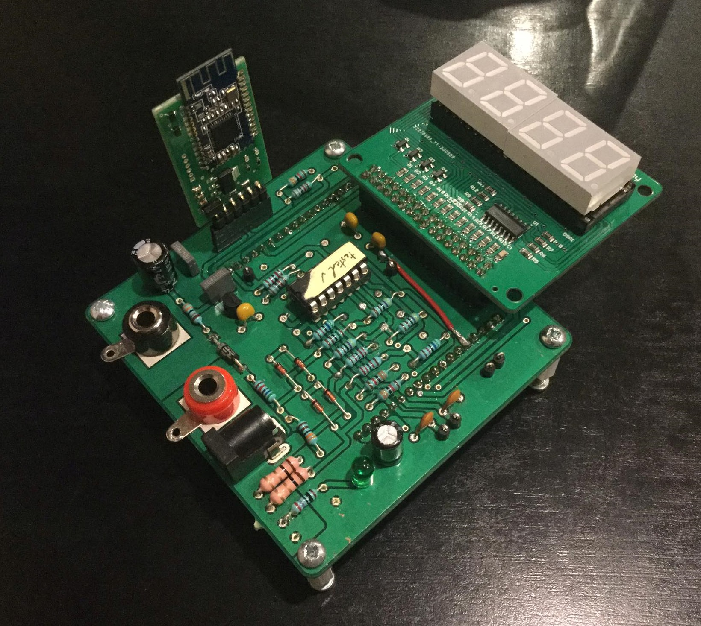
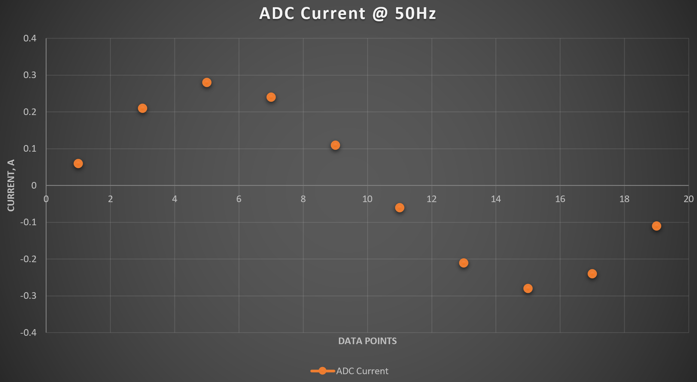
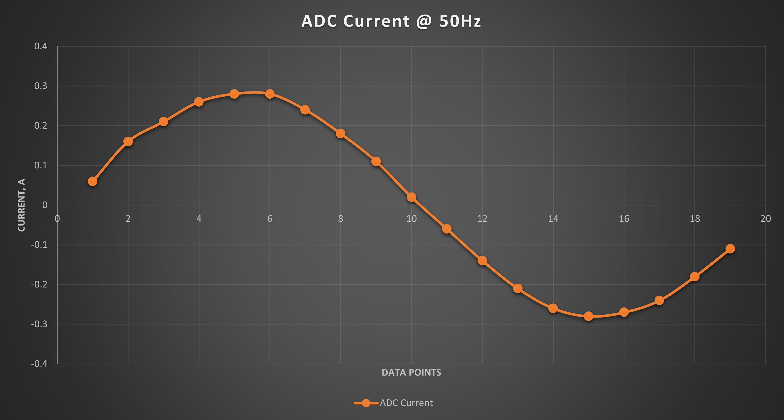
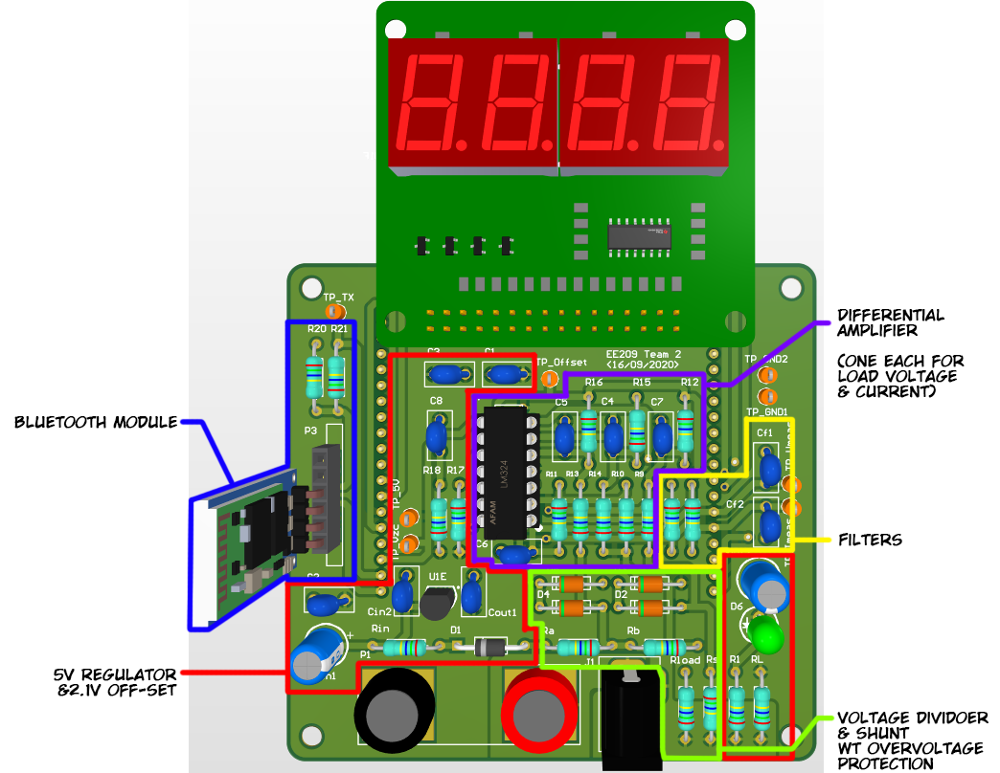
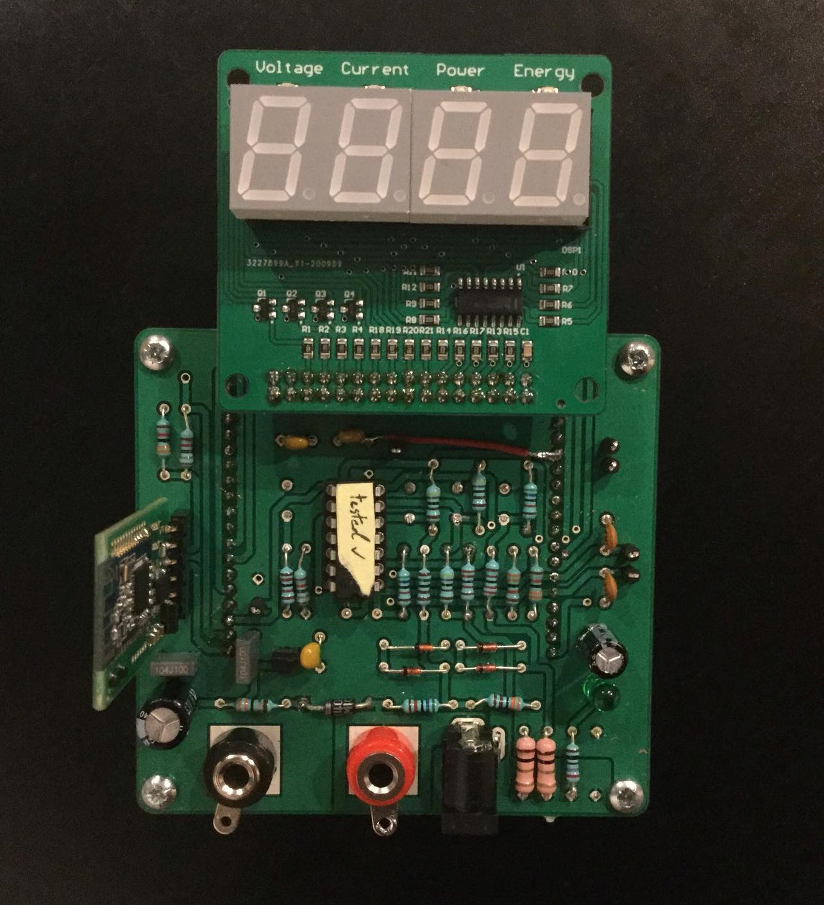
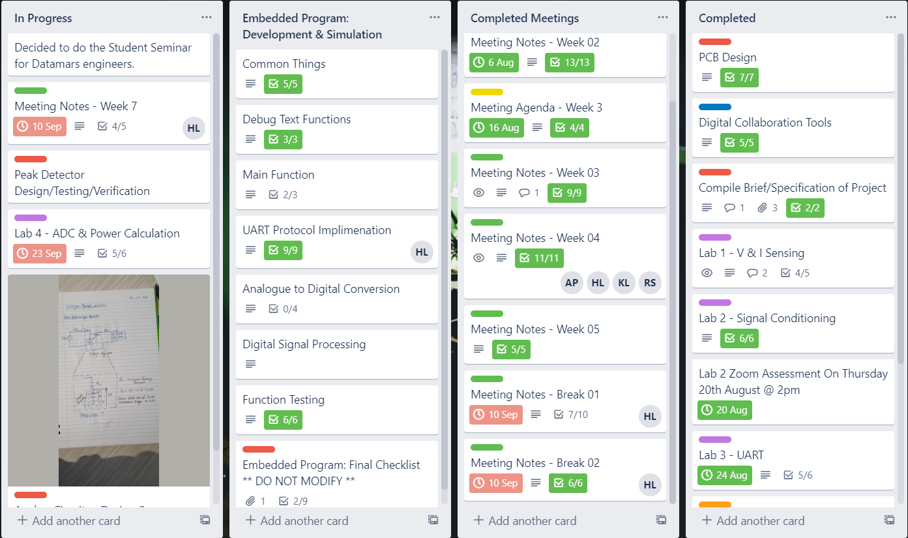
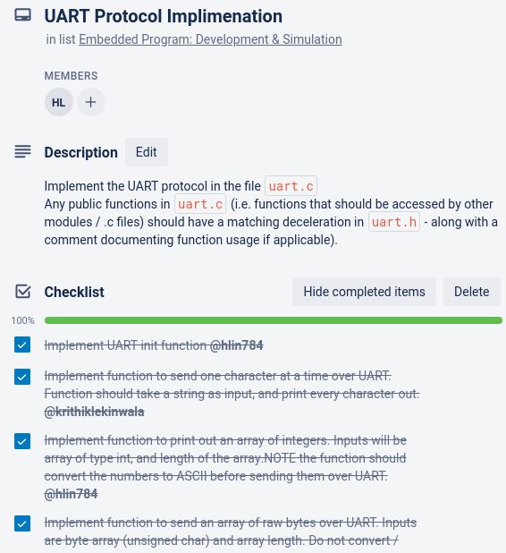
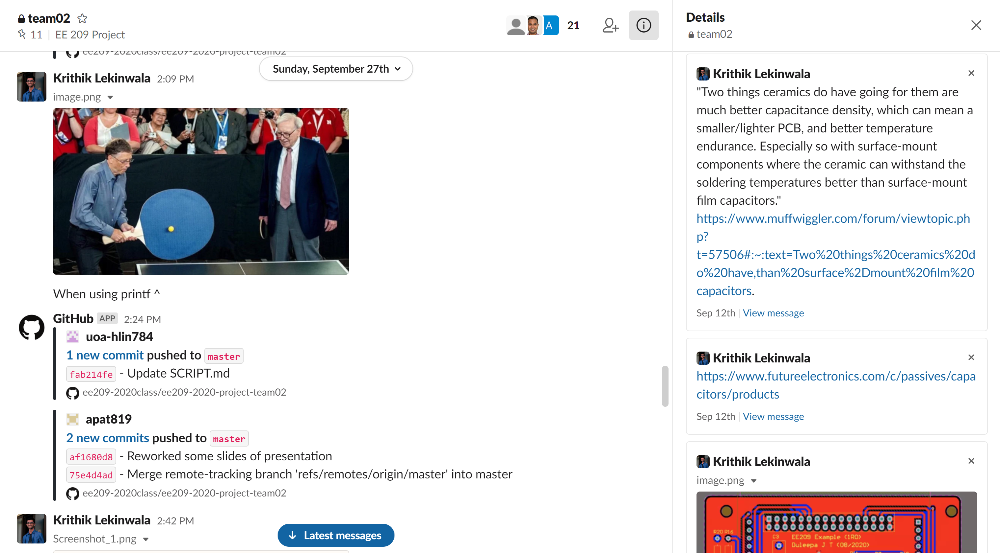
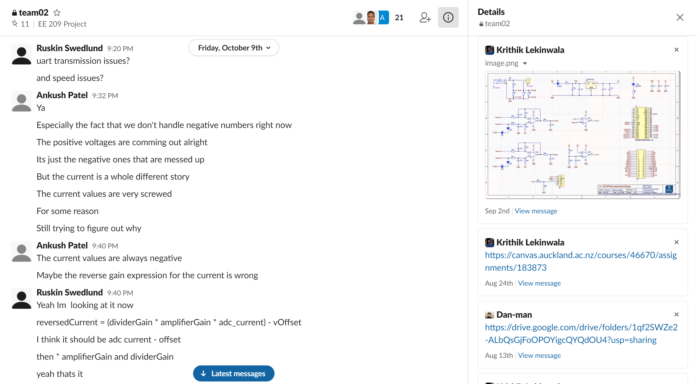

class: title-slide count: false .logo-title[] # Energy Monitor ### ELECTENG 209 .TitleAuthor[Hao Lin, Krithik Lekinwala, Ankush Patel and Ruskin Swedlund] --- layout: true name: template_slide .logo-slide[] .footer[[Hao Lin, Krithik Lekinwala, Ankush Patel and Ruskin Swedlund](https://www.linkedin.com/in/authorname), Department of Electrical, Computer and Software Engineering (2020)] --- # Introduction .left[ - Home energy monitor to read voltage, current and power consumption - Display information on a local 7-segment display, on a mobile app using Bluetooth and on a web app using python - Web Application Software developed independently by Ankush to display power, energy, voltage, and current values on a web server: https://ee209t02.herokuapp.com/ ] .center[] --- # Hardware Design - Developed parts of the analogue system individually - Restricted to E12 values - After validation, replicated in Altium for PCD development .center[<img src = "./img/Ltspice Schematic2.png" width="90%" />] .center[** Ltspice Schematic to validate design **] --- name: S3 # Firmware Design - Developed in Atmel AVR intergrated programming platform - Our key focus was to procure <b>modular</b> and <b>efficient</b> code .center[<img src = "../flowcharts/UART flowchart.png" width="80%" />] .center[** One of ou many flow charts of a module to service a uC peripheral **] --- .center[ <img src = "../flowcharts/ADC flowchart.png" width="80%" /> <img src = "../flowcharts/Signal Processing Flowchart.png" width="70%" /> ] --- name: S6 # Digital Signal Processing: Cubic Interpolation - Cubic Interopolation and Simpsons Rule used to achieve accurate peak values * Read all voltage ADC values first, then current ADC values to reduce phase difference * Entirely software based, makes a physical peak detector mostly obsolete in this scenario .center[   ] .center[ ** Sample data before and after interpolation **] --- # PCB Design and Development .center[   ] --- # Bench-work: ~55 hours Problems encountered during assembly of the PCB: - Attempt to extend our OpAmp as a first order filter compromised measurements physically. This alteration was discarded. - A ground trace was destroyed. A physical wire was connected to the nearest ground node to ammend for this. - The power supply to the uC was discovered to be forgotten. To amend for the lack of a supply, a physical wire was connected to the 5V supply with the uC. (In retrospect ths could have destroyed the uC, current limiting and over-voltage protection should have been implemented along with the connection.) - Influence such as the magnetic field from the voltage probe loop severely compromised our judgement. - Error of bench results were amended in correction functions. Correction derived from error analysis in excel. --- name: S8 # Project Management - Weekly meetings used to collaborate new ideas, task delegation, and using newly learnt knowledge to complete project deliverables - Hardware designed together using common knowledge. After validation, the design is optimized by analyzing extreme conditions (max v, i, r) - Discussed overall structure and identified key parts to implement for Firmware. Self-delegated tasks using Trello for implementations --- name: S10 # Collaboration Tools - Orientation and communication through Slack - Workflow planning and task management using Trello - Documentation in team repository on Github .center[   ] --- .center[  ] .center[** Integrated git commit notifications **] --- .center[  ] .center[** Negotiating and sorting out technical problems **] --- name: S10 # Git Management - Effective use of Git, rolling back when encountering issues with latest commit - Python script reads makefile to generate Atmel files which lets us configure how we want the project to be built without being constrained to the Atmel IDE - Used different branch merges to test different integration and interpolation methods (didn't destroy main branch while testing) <pre> <code style="text-align: center"> +--------------+ +---------------+ +---------------+ | | | | | | | Makefile +--------> genAtmel.py +----------> AtmelStudio | | | | | | Project Files | +--------------+ +---------------+ +---------------+ </code> </pre> .center[** Git Commit Graph **] --- class: title-slide layout: false count: false .logo-title[] # Acknowledgements #### Special thanks to Duleepa, Andrew, Logan and all TA's #### for their valuable feedback & assistance.